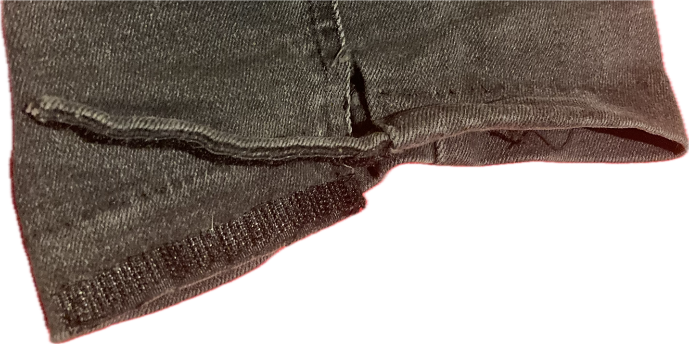
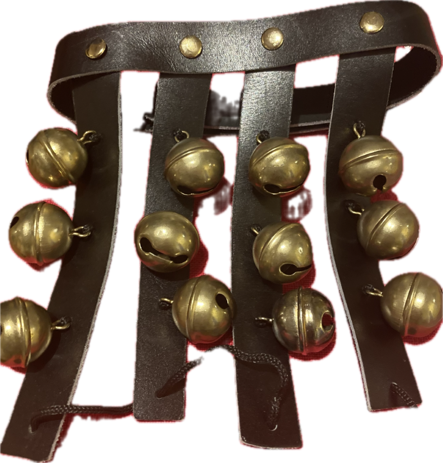

Quaggy Kit List
Our costume consists of:
- Black fitted jean breeches to below knee length when leg is bent (not jeggings)
- Black belt (optional)
- Plain white cotton unbranded collarless shirts with white buttons extending the full length, tucked in with sleeves rolled up to the elbow
- Knee length socks, one blue on the right leg and one green on the left, colours matching the rest of the team
- Blue and green ribbons colour-matched to the team attached at the elbow
- Baldricks: Judo belt sash and hand embroidered badge to match the team. Attached to shirt with safety pins x2 secure in place while dancing.
- Bell pads on each leg
- Black trainers
- White hankies that fall to the floor when held by the corners

Where to source items
Bells will be loaned to members by the side (and need to be returned upon leaving).
All other items to be sourced or fashioned by members.
- Judo belt for making the baldricks can be purchased here (colour: Green/Blue, size: 320cm). One belt is long enough to divide in two to form the baldrick.
-
Quaggy badge which sits at the centre of the baldrick - ask side members for the following, as some
people will
likely have leftover materials from making their badge:
- Embroidery threads: dmc 909 dmc 797 dmc 107
- Embroidery backing material (aida)
- Felt back & frame
- Tracing paper outline of design for badge
- Socks: Search for 'Plain Football Socks' in emerald green & royal blue online, similar to this Sports Direct listing, but a smaller size can be found on eBay etc. A slightly comfier variant is available at Thomas Schoowear in Dulwich.
- Breeches: Cut & re-hem a pair of jeans with velcro under knee to secure tight fit

- Ribbons: Nancy to supply ribbons to be made into bows and attached to arms with safety pins
- Hankies: 55cm x 55cm
- Bell pads: Contact Spike Cadman (divsplat1@aol.com), ref Nancy Khan and Quaggy Morris bell pads. www.spikecadmanleather.com
- Bells: Hobgoblin, ideally brass. Secure as depicted in photos.


{kind=link}